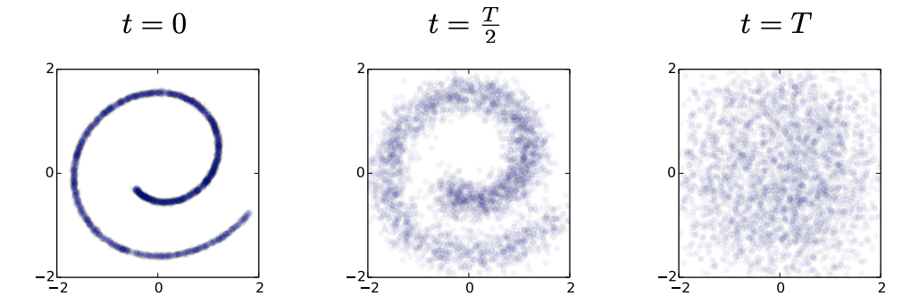
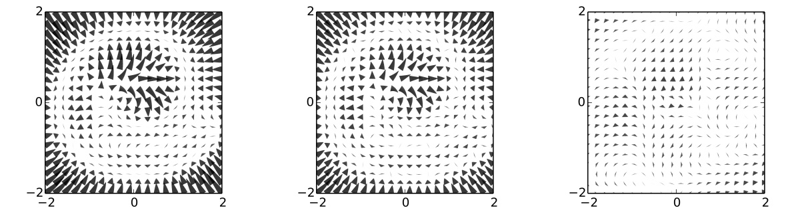
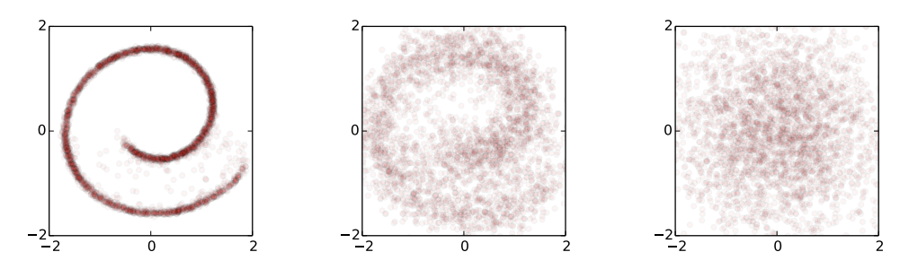
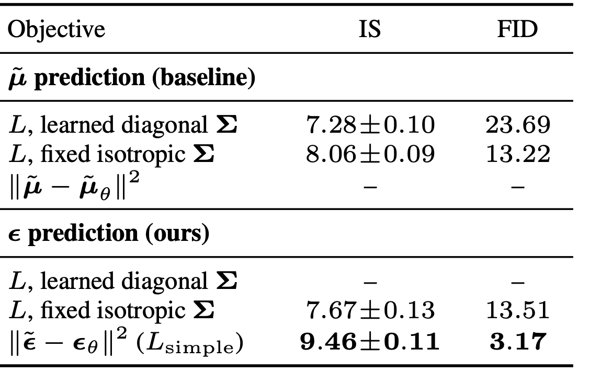
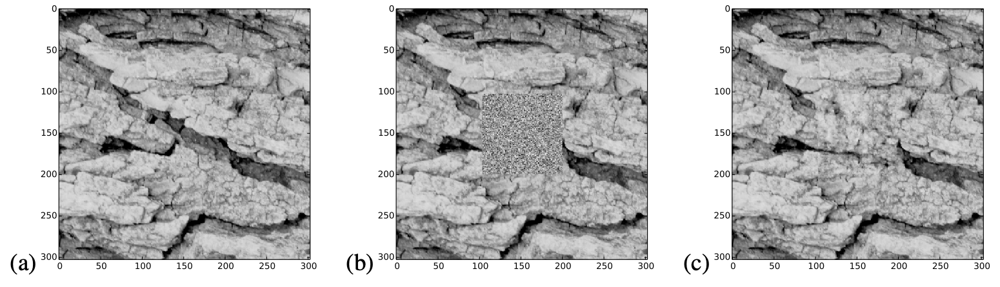
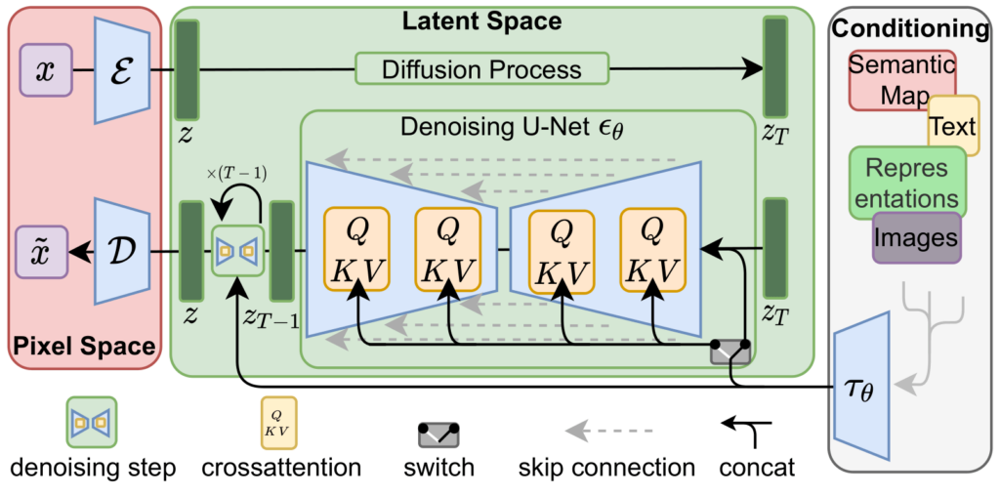
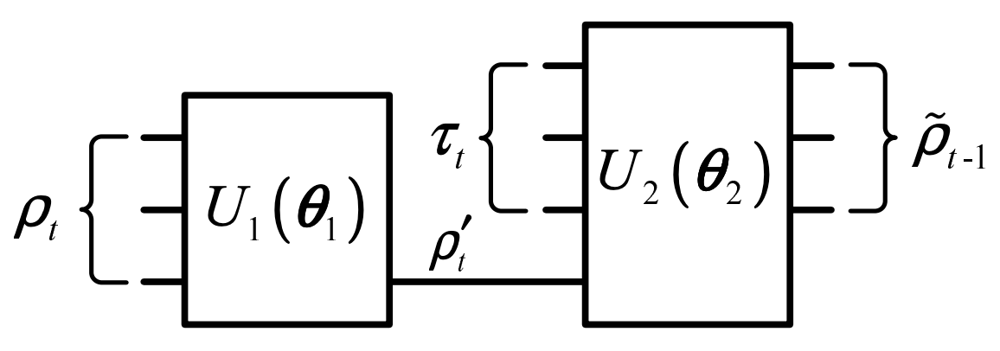

Table of Contents
Wherein we train our model to hallucinate data from noise.

1 Introduction
- Say we want to learn a distribution \(q \in \mathcal{P}(\mathcal{X})\) over some data space \(\mathcal{X}\). Often, we try to learn the underlying distribution by parameterizing a family \(q_\theta \in \mathcal{P}(\mathcal{X})\) and optimizing \(\theta\) from examples. Typically, we trade flexibility, i.e. the complexity of structure the family can fit, against tractability, i.e. the cost of fitting.
- On one end of the spectrum, \(q_\theta\) could be analytic, for instance some subset of the exponential family. This is rigid but easy to fit. At the other extreme, we have energy-based models, where we pick a function \(f_\theta: \mathcal{X} \to \mathbb{R}\) and encode into probabilities as a Gibbs distribution:$$ q_\theta(\mathbf{x}) = \frac{e^{-f(\mathbf{x})}}{Z[\theta]}, \quad Z[\theta] = \int_{\mathcal{X}} \mathrm{d}\mathbf{x}\, e^{-f_\theta(\mathbf{x})}.$$ This is very flexible, but \(Z[\theta]\) is a normalization constant which can often only be computed using expensive Monte Carlo methods.
- The paper [1] introduces a compromise: string together a bunch of analytic and hence cheaply computed steps. More steps means more flexibility; less steps means more tractability. The tradeoff is a hyperparameter. We'll survey the approach of this paper, along with the improvements introduced by [2].
- In mathematical terms, we seek an approximately reversible transformation \(\mathcal{T}_\beta: \mathcal{P}(\mathcal{X}) \to \mathcal{P}(\mathcal{X})\) which is analytic in some parameters \(\beta\). These parameters might have to estimated or learned, but the overall structure is known. This transformation also has some stationary distribution \(\pi\):$$\mathcal{T}_\beta [\pi] = \pi.$$The "forward" or inference process takes the data distribution \(q\), and transforms \(T\) times, where \(T\) is large enough to get close to the stationary distribution: $$(\mathcal{T}_{\beta_T} \circ \cdots \circ \mathcal{T}_{\beta_1})[q] = \mathcal{T}^{(T)}q \approx \pi.$$ The transformations \(\mathcal{T}_t\) may be different, but share the stationary distribution.
- A natural choice for \(\mathcal{T}_\beta\) is time evolution by a diffusion process. This adds noise until no signal is left. We picture this for Gaussian noise and the swiss roll dataset:

- The "backwards" or generative process tries to learn the \(\mathcal{T}_\theta\) in reverse: $$(\mathcal{T}_{\theta_1}^{-1} \circ \cdots \circ \mathcal{\theta_T}_{T}^{-1})[\pi] = \mathcal{T}^{(-T)}\pi = p.$$ It seems surprising that a process that adds noise can be reversed, but the intuition is that the information we are "blurring out" in the forward process is transferred into a learned "force field" which pulls a noisy distribution towards something less noisy, as shown for the swiss roll below:

- Since \(\pi\) is analytic, we can sample easily from it, then apply the reverse process to sample from the inferred distribution \(p\). We train this backwards process to be close to the forwards process. We illustrate for Gaussian diffusion below:

2 The basics
2.1 Forward process
- To add noise to a distribution, we need to specify (a) what kind of noise we are adding and (b) how much. We'll specify "what kind" using a stochastic DE, and "how much" by evolving an input by this DE for some time \(\gamma\).
- Let's see how this works for Gaussian noise. The idea is to add Brownian jitter to a data-valued random variable \(\mathbf{x}(t)\in \mathcal{X}\). This is described by a Wiener process:$$\mathrm{d}\mathbf{x}(t) = \mathrm{d} \mathbf{W}(t), \quad \mathbf{W}(t + \gamma) - \mathbf{W}(t) \sim \mathcal{N}(\mathbf{0},\mathbf{I}\gamma).$$ Hence, by integrating a stochastic differential equation, $$ \mathbf{x}(t+\gamma) - \mathbf{x}(t) \sim \mathcal{N}(\mathbf{0},\mathbf{I}\gamma).$$
- For a fixed time step \(\gamma\), we can let each point in the initial distribution wander this way. An initial distribution \(q_0(\mathbf{x})\) will be transformed into a distribution $$q'(\mathbf{x}') = \int_{\mathcal{X}}\mathrm{d}\mathbf{x} \, \mathbb{P}[\mathbf{W}(\gamma) = \mathbf{x}' - \mathbf{x}] q_0(\mathbf{x}) = \int_{\mathcal{X}}\mathrm{d}\mathbf{x} \,\mathcal{T}(\mathbf{x}',\mathbf{x})q_0(\mathbf{x}),$$or simply \(q'=\mathcal{T} q_0\), where \(q\) is viewed as a vector and \(\mathcal{T}\) as a matrix.
- It seems intuitive that if you add (i.e. convolve) white noise with white noise, you get white noise, so we might expect the stationary distribution to be \(\pi = \mathcal{N}(\mathbf{0}, \mathbf{I})\). This isn't true! The problem is that the kernel spreads out from each point and approaches zero uniformly. We need a potential to confine it.
- To stop it from spreading out, we add a restoring force in our stochastic DE which pulls data back to the origin, and pulls harder the further it is. Restoring force plus noise gives the famous Ornstein–Uhlenbeck process: $$\mathrm{d}\mathbf{x}(t) = -\frac{1}{2}\alpha \mathbf{x}(t)\,\mathrm{d}t + \mathrm{d}\mathbf{W}(t).$$ It's not hard to show this has the stationary solution $$\pi = \mathcal{N}(\mathbf{0}, \alpha^{-1}\mathbf{I}),$$ so we can set \(\alpha = 1\) to get unit-covariance white noise. Similarly, you can show that the transition matrix for time step \(\gamma\) takes the form$$\mathcal{T}(\mathbf{x}', \mathbf{x}) = \mathcal{N}(\mathbf{x}'| \mathbf{x}\sqrt{1-\beta},\mathbf{I}\beta)$$ where \(\beta = 1 - e^{-\alpha\gamma}\) is called the diffusion rate.
- The forward process doesn't do much except add noise to data. We need to set a total number of steps \(T\) and a schedule of diffusion rates \(\beta_t\), \(t=1, \ldots, T\) at each step (learnable). Define$$ q^{(t)} = \mathcal{T}_{\beta_t} \mathcal{T}_{\beta_{t-1}}\cdots \mathcal{T}_{\beta_1} q = \mathcal{T}^{(t)}q, \quad \mathcal{T}_{\beta}(\mathbf{x}', \mathbf{x}) = \mathcal{N}(\mathbf{x}'| \sqrt{1-\beta}\mathbf{x},\mathbf{I}\beta)$$ The final distribution is \(q^{(T)}\). The forward process can be simplified analytically bby reparametrizing the Gaussians involved: $$\begin{align}\mathcal{T}^{(t)}(\mathbf{x}^{(t)}, \mathbf{x}^{(0)}) & = \mathcal{N}(\mathbf{x}^{(t)} | \sqrt{\bar{\alpha}_t}\mathbf{x}^{(0)}, \bar{\beta}_t\mathbf{I}) \label{gauss-string} \tag{1}\\ \bar{\alpha}_t & = \prod_{t'=1}^t \alpha_{t'}, \,\, \alpha_t = 1 - \beta_t, \,\, \bar{\beta}_t = 1 - \bar{\alpha}_t.\end{align}$$ For large \(t\), the product \(\bar{\alpha}_t \to 0\), and hence the output distribution approaches unit-covariance white noise, \(q^{(t)} \sim \mathcal{N}(\mathbf{0}, \mathbf{I})\).
2.2 Reverse process
- The reverse process is a sequence of progressively denoised distributions$$p^{(t)} = \mathcal{T}^{-1}_{\theta_t} \cdots \mathcal{T}^{-1}_{\theta_T}\pi = \mathcal{T}^{(-t)}\pi.$$We want \(\mathcal{T}^{-1}_{\theta_t}\) to be the approximate inverse of \(\mathcal{T}_{\beta_t}\), so that if \(\mathcal{T}^{(T)}q\approx \pi\), then $$p = p^{(0)} = \mathcal{T}^{(-T)}\pi \approx \mathcal{T}^{(-T)}\mathcal{T}^{(T)}q \approx q,$$ and we approximately recover the underlying distribution. The resulting distribution, \(p\), should be stationary under backward steps,
\[ \mathcal{T}^{-1}_\theta p = p. \label{fix-p} \tag{2} \]
- Running a continuous diffusion process in reverse yields a related diffusion process [3]. We are using finite time updates, but for small enough \(\beta_i\), the reversed transformation \(\mathcal{T}_{\theta_t}\) should be approximately Gaussian, with$$ \mathcal{T}^{-1}_{\theta_t}(\mathbf{x}', \mathbf{x}) = \mathcal{N}(\mathbf{x}'| \boldsymbol{\mu}_{\theta_t}(\mathbf{x}, t), \boldsymbol{\Sigma}_{\theta_t}(\mathbf{x}, t))$$ for some mean \(\boldsymbol{\mu}_{\theta_t}\) and covariance \(\boldsymbol{\Sigma}_{\theta_t}\) functions we can learn.
- Here's an example from \(\texttt{midjourney}\):

- We can think of the difference$$\mathbf{f}_{\theta_t}(\mathbf{x}, t)=\boldsymbol{\mu}_{\theta_t}(\mathbf{x}, t) - \mathbf{x}$$ as a time-dependent drift term, dragging \(\mathbf{x}\) towards the \(\boldsymbol{\mu}_{\theta_t}\), or globally speaking, dragging the stationary noise distribution towards the data distribution. This idea is taken much further in score- and energy-based models.
- For the swiss roll, we already saw the trained drift \(\mathbf{f}_{\theta_t}(\mathbf{x},t)\):
- Although we can't directly invert a forward step, we can conditionally invert it using Gaussian process techniques. Conditioning on the input value \(\mathbf{x}^{(0)}\) from the data distribution, we have: $$\mathbb{P}[q^{(t-1)}(\mathbf{x}^{(0)}) = \mathbf{x}^{(t-1)} | q^{(t)}(\mathbf{x}^{(0)}) = \mathbf{x}^{(t)}] = \mathcal{N}(\mathbf{x}^{(t-1)}|\tilde{\boldsymbol{\mu}}_t(\mathbf{x}^{(t)}, \mathbf{x}^{(0)}), \tilde{\beta}_t\mathbf{I}),$$ where the parameters take the form $$\begin{align} \tilde{\boldsymbol{\mu}}_t(\mathbf{x}^{(t)}, \mathbf{x}^{(0)}) & = \frac{\sqrt{\alpha_t}\bar{\beta}_{t-1}\mathbf{x}^{(t)}+ \sqrt{\bar{\alpha}_{t-1}}\beta_t \mathbf{x}^{(0)}}{\bar{\beta}_t}, \quad \tilde{\beta}_t = \left(\frac{\bar{\beta}_{t-1}}{\bar{\beta}_t}\right)\beta_t.\label{cond-rev}\tag{3}\end{align}$$
- To perform the unconditional reversal, we would need to integrate over the true distribution \(q\), which we don't know. Instead, we can try to estimate \(\mathbf{x}^{(0)}\). Using the fact that a sequence of updates is Gaussian, it's easy to see from \((\ref{gauss-string})\) that $$ \boldsymbol{\epsilon}=\bar{\beta}_t^{-1/2}\left(\mathbf{x}^{(t)}-\sqrt{\bar{\alpha}_t}\mathbf{x}^{(0)}\right) \sim \mathcal{N}(\mathbf{0}, \mathbf{I}).$$ Thus, estimating \(\mathbf{x}^{(0)}\) is equivalent to estimating some standard Gaussian noise \(\boldsymbol{\epsilon}\).
- We can parameterize \(\boldsymbol{\epsilon}_\theta\) as an MLP, transformer, or whatever architecture we like. We then set the reverse process mean \(\boldsymbol{\mu}_\theta\) to be a function of \(\boldsymbol{\epsilon}_\theta\), namely $$\begin{align} \boldsymbol{\mu}_\theta(\mathbf{x}^{(t)},t) &= \tilde{\boldsymbol{\mu}}_t\left(\mathbf{x}^{(t)}, \bar{\alpha}_t^{-1/2}(\mathbf{x}^{(t)}-\bar{\beta}_t^{1/2}\boldsymbol{\epsilon}_\theta(\mathbf{x}^{(t)},t))\right) \\ & = \alpha_t^{-1/2}\left(\mathbf{x}^{(t)}-\bar{\beta}_t^{-1/2}\beta_t\boldsymbol{\epsilon}_\theta(\mathbf{x}^{(t)},t)\right)\label{mean} \tag{4},\end{align}$$ skipping some algebra on the last line. Now we need an objective to train!
2.3 Efficient denoising
- Assume we have some data \(\mathfrak{T} = \{\mathbf{x}_i\}_{t\in I}\) drawn from the true distribution \(q\). Ideally, we would maximize the log likelihood: $$\sum_{i\in I}\ln p_\theta(\mathbf{x}_i) = \sum_{i\in I}\ln \int_{\mathcal{X}^T} \mathrm{d}\mathbf{z} \, p_\theta(\mathbf{x}_i|\mathbf{z})p_\theta(\mathbf{z}),$$ where \(\theta\) inserts the noise estimator \(\boldsymbol{\epsilon}_\theta\) at each reverse step, and $$\mathbf{z}=(\mathbf{x}^{(1)},\ldots, \mathbf{x}^{(T)})\in\mathcal{X}^T$$ is a latent path of \(T\) data points. This integral is combinatorially intractable.
- Instead of the log-likelihood, we'll optimize the evidence lower bound (ELBO). This rests on the trivial observation that $$p_\theta(\mathbf{x}) = \int_{\mathcal{X}^T} \mathrm{d}\mathbf{z} \, p_\theta(\mathbf{x}, \mathbf{z}) = \mathbb{E}_{\mathbf{z}\sim q(\cdot | \mathbf{x})}\left[\frac{p_\theta(\mathbf{x},\mathbf{z})}{q(\mathbf{z}|\mathbf{x})}\right],$$ and hence by Jensen's inequality $$\ln p_\theta(\mathbf{x}) \geq \mathbb{E}_{\mathbf{z}\sim q(\cdot | \mathbf{x})}\left[\ln\left(\frac{p_\theta(\mathbf{x},\mathbf{z})}{q(\mathbf{z}|\mathbf{x})}\right)\right].$$ The RHS is the ELBO function. Moreover, we can write $$\begin{align} \mathbb{E}_{\mathbf{z}\sim q(\cdot | \mathbf{x})}\left[\ln\left(\frac{p_\theta(\mathbf{x})p_\theta(\mathbf{z}|\mathbf{x})}{q(\mathbf{z}|\mathbf{x})}\right)\right] & = \ln p_\theta(\mathbf{x}) - D_\text{KL}\big(q(\mathbf{z}|\mathbf{x})\Vert p_\theta(\mathbf{z}|\mathbf{x})\big),\end{align}$$ so the tightness of the inequality is precisely the KL divergence between \(p_\theta\) and \(q\).
- To define a loss function, we also take the expectation over \(q\): $$L(\theta) = \mathbb{E}_{\mathbf{x}, \mathbf{z} \sim q}\left[\ln\left(\frac{p_\theta(\mathbf{x},\mathbf{z})}{q(\mathbf{z}|\mathbf{x})}\right)\right].$$
- Expanding \(q\) and \(p\) into their constituent transitions, and using the fact that \(p_\theta(\mathbf{x}^{(T)})=\pi(\mathbf{x}^{(T)})\) is independent of \(\theta\), you can show that $$\begin{align}L(\theta)&=\sum_{t=1}^T \mathbb{E}_{\mathbf{x}^{(t-1)}, \mathbf{x}^{(t)}\sim q}\left[-\ln \mathcal{T}^{-1}_{\theta_t}(\mathbf{x}^{(t-1)}|\mathbf{x}^{(t)})\right] + C \\ & = \sum_{t=1}^T L_t(\theta_t) + C,\end{align}$$where \(C\) is a constant independent of parameters. Since the parameters \(\theta_t\) are independent, we can focus on minimizing each loss term \(L_t\) individually.
- To connect this to the data distribution, we would like to trade the expectation over \(\mathbf{x}^{(t-1)}, \mathbf{x}^{(t)}\) for an expectation over real data \(\mathbf{x}^{(0)}\) and noise \(\boldsymbol{\epsilon} \sim \mathcal{N}(\mathbf{0}, \mathbf{I})\). Since we sample \(\mathbf{x}^{(t-1)}, \mathbf{x}^{(t)}\) according to the forward process, \((\ref{gauss-string})\) and \((\ref{cond-rev})\) give $$\mathbf{x}^{(t-1)} = \tilde{\boldsymbol{\mu}}(\bar{\alpha}_t^{1/2}\mathbf{x}^{(0)}+\bar{\beta}_t^{1/2}\boldsymbol{\epsilon}, \mathbf{x}^{(0)}) + \tilde{\beta}_t^{1/2} \boldsymbol{\epsilon}$$ for a single noise variable \(\boldsymbol{\epsilon} \sim \mathcal{N}(\mathbf{0}, \mathbf{I})\) we reuse, since \(\mathbf{x}^{(t-1)}\) and \(\mathbf{x}^{(t)}\) are both part of the same Gaussian process.
- Substituting into the reverse process with mean \((\ref{mean})\) and covariance \(\tilde{\beta}_t\mathbf{I}\), we find $$\begin{align}\mathcal{T}^{-1}_{\theta_t}(\mathbf{x}^{(t-1)},\mathbf{x}^{(t)}) \propto \exp\left[\frac{1}{2\tilde{\beta}_t}\cdot \frac{\beta_t^2}{\alpha_t\bar{\beta}_t}\Vert\boldsymbol{\epsilon}-\boldsymbol{\epsilon}_{\theta_t}\Vert^2\right],\end{align}$$ since the \(\mathbf{x}^{(t)}\) terms cancel and we are left only with the difference between the true \(\mathbf{x}^{(0)}\) and our approximation. Simplifying the constants, we obtain $$\begin{align}L_t(\theta_t) & = \frac{\beta_t}{2\alpha_t\bar{\beta}_{t-1}} \mathbb{E}_{\mathbf{x}^{(0)} \sim q, \boldsymbol{\epsilon}\sim\mathcal{N}(\mathbf{0},\mathbf{I})} \Vert \boldsymbol{\epsilon}-\boldsymbol{\epsilon}_{\theta_t}(\mathbf{x}^{(t)}, t)\Vert^2 \\ \mathbf{x}^{(t)} & = \bar{\alpha}_t^{1/2}\mathbf{x}^{(0)} + \bar{\beta}_t^{1/2}\boldsymbol{\epsilon}.\end{align}$$
- In [2], they tested a simplified objective $$L_{\text{simple},t}(\theta_t)= \mathbb{E}_{\mathbf{x}^{(0)} \sim q, \boldsymbol{\epsilon}\sim \mathcal{N}(\mathbf{0},\mathbf{I})} \Vert \boldsymbol{\epsilon}-\boldsymbol{\epsilon}_{\theta_t}\Vert ^2.$$ Below, we show inception score (IS) and FID (aka 2-Wasserstein distance between \(p\) and \(q\)) for various objective functions on \(\texttt{CIFAR10}\):

- The simplified loss is best (largest IS, smallest FID) by a considerable margin!
3 Advanced topics
3.1 Conditional denoising
- So far, all we can do is generate random samples from \(p = \mathcal{T}^{(-T)}\pi\), by sampling from the stationary distribution \(\pi\) and applying our denoiser \(\mathcal{T}^{(-T)}\). But, as pointed out in [1], the denoiser can be used for conditional sampling.
- A nice example is inpainting. In this picture of bark, a rectangular chunk has been removed from the original (a), filled with static (b), and denoised (c):

- Clearly, the learned means from vanilla denoising won't work; they will infill this static patch with a random, smaller image. If \(\mathcal{C}\) is a condition, such as fixed pixel values, our denoising target is instead $$q(\mathbf{x}^{(0)} | \mathcal{C}) \propto q(\mathbf{x}^{(0)}) \mathbb{P}[\mathcal{C}|\mathbf{x}^{(0)}] = q(\mathbf{x}^{(0)})r_{\mathcal{C}}(\mathbf{x}^{(0)})$$using Bayes' theorem. We assume that \(r_{\mathcal{C}}(\mathbf{x}^{(0)})=\mathbb{P}[\mathcal{C}|\mathbf{x}^{(0)}]\) is known, so we can assess how well a data point obeys the condition, e.g. the plausibility of an infill. (For inpainting, we can use FID.)
- Since \(p\) approximates \(q\), our goal is to sample from the distribution \(\tilde{p} = p r_\mathcal{C}/Z_\mathcal{C}\), where \(Z_\mathcal{C}\) is a normalization constant we want to avoid calculating. The difficulty is that, even though we know \(p\) and \(r_\mathcal{C}\), we do not usually know the normalizing constant. Thankfully, we can perturb our reverse process to learn \(\tilde{p}\) instead of \(p\), without having to worry about normalization.
- First, we will modify the stationarity condition \((\ref{fix-p})\) to \(\tilde{\mathcal{T}}^{-1}_\theta\tilde{p}=\tilde{p}\) so that the modified reverse process \(\tilde{\mathcal{T}}^{-1}_\theta\) fixes \(\tilde{p}\). Our task is to determine \(\tilde{\mathcal{T}}^{-1}_\theta\). In fact, it's easy to see that we can use $$\tilde{\mathcal{T}}^{-1}_\theta(\mathbf{x}, \mathbf{x}') = \frac{r_\mathcal{C}(\mathbf{x})}{r_\mathcal{C}(\mathbf{x}')}\mathcal{T}^{-1}_\theta(\mathbf{x}, \mathbf{x}'),$$ which doesn't require knowledge of \(Z_\mathcal{C}\). Let's check it works: $$\begin{align}[\tilde{\mathcal{T}}^{-1}_\theta\tilde{p}](\mathbf{x}) & = \int\mathrm{d}\mathbf{x}' \frac{r_\mathcal{C}(\mathbf{x})}{r_\mathcal{C}(\mathbf{x}')}\mathcal{T}^{-1}_\theta(\mathbf{x},\mathbf{x}')\cdot \frac{r_\mathcal{C}(\mathbf{x}')}{Z_\mathcal{C}} p(\mathbf{x'}) \\ & = \frac{r_\mathcal{C}(\mathbf{x})}{Z_\mathcal{C}} [\mathcal{T}^{-1}_\theta p](\mathbf{x}) \\ & = \frac{r_\mathcal{C}(\mathbf{x})}{Z_\mathcal{C}} p(\mathbf{x}) \\ & = \tilde{p}(\mathbf{x}),\end{align}.$$
- Although we don't need to know \(Z_\mathcal{C}\), the new transition matrix \(\tilde{\mathcal{T}}^{-1}_\theta\) defined this way might not be Gaussian, leading to an intractable backward process. Thankfully, if \(r_\mathcal{C}\) varies slowly, it will only perturb the Gaussian process. Note that $$ \ln \tilde{\mathcal{T}}^{-1}_{\theta}(\mathbf{x},\mathbf{x}') = \ln \mathcal{N}(\mathbf{x} | \boldsymbol{\mu}_{\theta}, \boldsymbol{\Sigma}_{\theta}) + \ln r_{\mathcal{C}}(\mathbf{x}) - \ln r_{\mathcal{C}}(\mathbf{x}') - \ln Z_\mathcal{C}.$$ Assuming that \(\ln r_\mathcal{C}\) varies slowly with respect to the Gaussian (i.e. the covariance \(\boldsymbol{\Sigma}_{\theta}\)), we can Taylor expand both terms around \(\boldsymbol{\mu}_{\theta}\) so that
\[ \ln r_{\mathcal{C}}(\mathbf{x}) - \ln r_{\mathcal{C}}(\mathbf{x}') \approx (\mathbf{x} - \mathbf{x}') \cdot \nabla \ln r_\mathcal{C}(\boldsymbol{\mu}_{\theta}). \]
- Substituting back in, we find that $$\begin{align}\tilde{\mathcal{T}}^{-1}_{\theta}(\mathbf{x}, \mathbf{x}') & \approx C\exp\left[\frac{1}{2}(\mathbf{x}-\boldsymbol{\mu}_{\theta})^T \boldsymbol{\Sigma}_{\theta}^{-1}(\mathbf{x}-\boldsymbol{\mu}_{\theta}) +(\mathbf{x} - \mathbf{x}') \cdot \nabla \ln r_\mathcal{C}(\boldsymbol{\mu}_{\theta})\right] \\ & = C'\exp\left[\frac{1}{2}\big(\mathbf{x}-\boldsymbol{\mu}_{\theta} + \boldsymbol{\Sigma}_{\theta}\nabla \ln r_\mathcal{C}(\boldsymbol{\mu}_{\theta})\big)^T \boldsymbol{\Sigma}_{\theta}^{-1}\big(\mathbf{x}-\boldsymbol{\mu}_{\theta} + \boldsymbol{\Sigma}_{\theta}\nabla \ln r_\mathcal{C}(\boldsymbol{\mu}_{\theta})\big)\right],\end{align}$$ where we absorb the \(\mathbf{x}'\cdot \nabla \ln r_\mathcal{C}(\boldsymbol{\mu}_{\theta})\) and some other terms into the normalization constant \(C'\). This is a mouthful, but just tells us the mean is perturbed by $$\delta \boldsymbol{\mu}_{\theta} = -\boldsymbol{\Sigma}_{\theta}\nabla \ln r_\mathcal{C}(\boldsymbol{\mu}_{\theta}),\tag{5}\label{pert}$$ so conditional denoising remains Gaussian. Since the function \(\boldsymbol{\mu}_{\theta}\) is the same, we can use our existing parameters for the noise estimator \(\boldsymbol{\epsilon}_\theta\), but perturb with \((\ref{pert})\).
- Another example text-to-image. Below is a flowchart for \(\texttt{Stable Diffusion}\). I won't talk about the architecture in detail, but the point is that \(r_\mathcal{C}(\mathbf{x}^{(0)})\) evaluates the plausibility of an image \(\mathbf{x}^{(0)}\) given text description \(\mathcal{C}\):

- It works by converting both image and text into an intermediate vector space representation (on the right). It feeds this representation into a cross-attention mechanism to compute \((\ref{pert})\) for denoising. But that's a story for another time!
3.2 Quantum extensions
- There are a few proposals in the literature for "quantum" diffusion models.
- Paper [5] replaces the classical process of noise addition with a quantum process of noise addition. The idea is to use a parameterized quantum circuit (PQC) in the backwards process to learn a compressed a representation of the state as we go. Although quantum circuits are likely to be better at learning quantum noise, compression is a far cry from analytic updates. This scheme seems doomed.

- Similarly, in [6], PQCs are used to estimate the parameters of variable \(\boldsymbol{\epsilon}_\theta\). Hoping that generic PQCs will outperform neural networks, at scale, is crazy. A slightly more sophisticated approach is outlined in [7], which uses scrambling dynamics to go forward, and measurement to denoise; this is clever and has various merits, but again sacrifices analyticity of updates. I think is a bad idea.
- Let's see if we can do better! It would be nice to find a quantum process where:
- We have a class of analytic evolution operators closed under multiplication and invertible in the continuous limit (backward process).
- We have a one-parameter family of operators with the same analytic stationary distribution (forward process).
- We can flow an arbitrary to a stationary distribution (expressivity).
- We have reason to think a quantum computer would be better suited to perform either generation or inference (quantum bias).
- I will briefly comment on what seems to me the most promising candidate, namely dissipative dynamics in phase space. Turning to our checklist:
- The operators are finite-time Lindbladians, which can be made analytic for certain operations, and are reversible in the continuous limit using tools from quantum error correction (see [8]).
- The one-parameter family is time-evolution, and we can restrict the operations so that stationary states are Gaussian.
- We can flow arbitrary initial states to Gaussians because (modulo symmetry) the stationary states of Lindbladian evolution are unique (see [9]).
- Finally, for implementing linear optics plus simple dissipative dynamics, we expect exponential advantage for quantum computers (cf. boson sampling).
- These comments are speculative, but the analogy to the mechanism of diffusion models seems more promising. Watch this space!
4 References
- "Deep Unsupervised Learning using Nonequilibrium Thermodynamics" (2015). Jascha Sohl-Dickstein, Eric A. Weiss, Niru Maheswaranathan, Surya Ganguli.
- "Denoising Diffusion Probabilistic Models" (2020). Jonathan Ho, Ajay Jain, Pieter Abbeel.
- "Time reversal of diffusions" (1986). U. G. Haussman, E. Pardoux.
- "Continuous variable quantum information: Gaussian states and beyond" (2014). Gerardo Adesso, Sammy Ragy, Antony R. Lee.
- "Quantum Generative Diffusion Model: A Fully Quantum-Mechanical Model for Generating Quantum State Ensemble" (2024). Chuangtao Chen, Qinglin Zhao, MengChu Zhou, Zhimin He, Zhili Sun, Haozhen Situ.
- "Quantum Diffusion Models" (2023). Andrea Cacioppo, Lorenzo Colantonio, Simone Bordoni, Stefano Giagu.
- "Generative Quantum Machine Learning via Denoising Diffusion Probabilistic Models" (2023). Bingzhi Zhang, Peng Xu, Xiaohui Chen, Quntao Zhuang.
- "Reversing Lindblad Dynamics via Continuous Petz Recovery Map" (2021). Hyukjoon Kwon, Rick Mukherjee, M. S. Kim.
- "Field Theory of Many-Body Lindbladian Dynamics" (2023). Foster Thompson, Alex Kamenev.